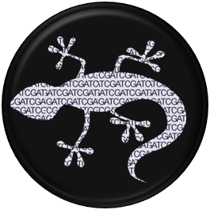
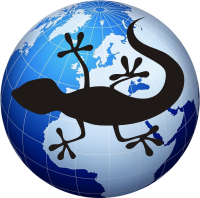

- What's New
- Meetings
- Collaborations
- Forum
- Links
- Data Use Policy
- FAQs
- About Us
- Site Maps
What is LizardBase?
Lizards have become important model systems for genetic, organismal, and ecological studies. With the recent completion of the Anolis carolinensis (green anole) genome and increasing interest in lizard biology, LizardBase was created to facilitate global data dissemination and collaboration. This website provides an entryway into lizard biology via two portals below. The genomics portal leads to a set of bioinformatics related resources and tools. The GeoBiology portal leads to a database of lizard related data and resources, easily navigated via a geographical interface.

Genomics Portal

Geobiology Portal
GIS Filters
Sex
What's New at LizardBase?
| October 2009 | LizardBase is in development. Come back soon! |
| September 2009 | Planning for LizardBase begins |